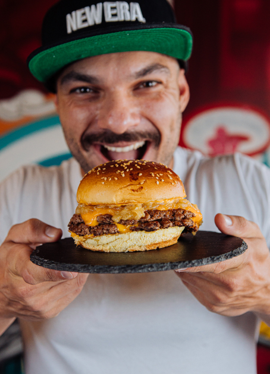
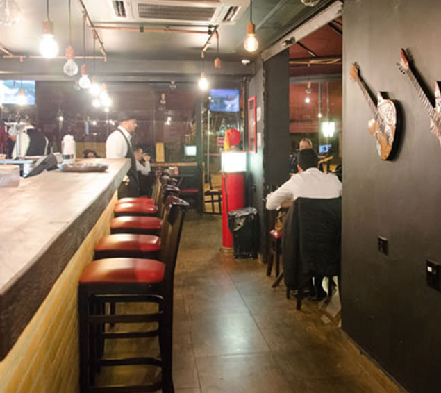

Em momentos inesperados, boas ideias surgem e novos negócios crescem! Foi assim que nasceu o EaiBurguer. Na pandemia em 2020, na cozinha do nosso apartamento, começamos a pensar em receitas com hambúrgueres e ingredientes premium. Testamos, aprimoramos e colocamos para jogo primeiro com nossos familiares e amigos. Foi aí o nosso primeiro boom! Eles AMARAM, aprovaram as receitas e apoiaram a decisão de abrir uma hamburgueria. Com a criação do nosso Instagram e o início da divulgação dos nossos lanches, demos o próximo passo. Separamos um final de semana, preparamos tudo com carinho e, para nossa surpresa, vendemos 150 lanches! Então, neste momento vimos o potencial do EaiBurguer. Por isso, seguimos para os próximos passos. Alugamos a cozinha de um restaurante para dar início às nossas atividades, e a cada fim de semana nossa clientela aumentava e os lanches se tornavam um sucesso! Já não tinha jeito: precisávamos de um espaço para o EaiBurguer criar vida, espaço próprio e muito mais sabor com os lanches únicos e apetitosos. E foi na nossa matriz, em Jundiaí/SP, que atendemos 300 pedidos por dia! O sucesso foi tanto que hoje estamos em mais de 5 estados, com um projeto de expansão ainda mais amplo para levar o EaiBurguer para além do Brasil! Afinal, conquistar o mundo com o nosso hambúrguer é a nossa meta!
O Chef Cadú Alves, responsável por todo cardápio de 'O' Burguer, é graduado em marketing e gastronomia. Porém, costumava fazer da arte culinária um hobby, até que um dia foi convidado para participar de uma feira gastronômica onde mostrou deliciosos hambúrgueres. A aceitação do público foi tão grande que os lanches foram vendidos em tempo recorde.
Nesse dia, tudo mudou. Cadú continuou se aprimorando e participando de diversas feiras e eventos com um carrinho de mão adaptado e food truck. O chef foi buscar inspirações e depois de muitos cursos e laboratórios na cozinha – passando pela cozinha molecular – dedicou-se à cozinha contemporânea e ao segmento de carnes e hambúrgueres artesanais recheados, quando decidiu se especializar em harmonizar as melhores carnes, queijos e temperos, surpreendendo com suas receitas inovadoras.Somos a melhor hamburgeria premium do Ceará
100% dos nossos ingredientes são de primeiríssima qualidade;
Dedicamos tempo e amor para entregar o melhor hambúrger para você!
